Changelog for QGIS 3.0¶
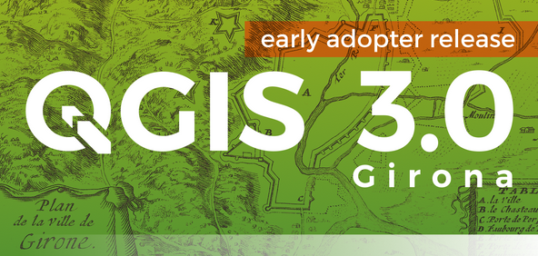
The greatest QGIS release ever! QGIS 3.0 is a huge overhaul and cleanup of our beloved Open Source GIS. QGIS 3.0 brings a massive list of new changes - the highlights of which we will try to cover here. As always can we remind you that QGIS is an open source project and if you are able to, consider supporting our work through donations, sponsorship or contributions to the code documentation, web site and so on.
Thanks
We would like to thank the developers, documenters, testers and all the many folks out there who volunteer their time and effort (or fund people to do so). From the QGIS community we hope you enjoy this release! If you wish to donate time, money or otherwise get involved in making QGIS more awesome, please wander along to qgis.org and lend a hand!
QGIS is supported by donors and sponsors. A current list of donors who have made financial contributions large and small to the project can be seen on our donors list. If you would like to become and official project sponsor, please visit our sponsorship page for details. Sponsoring QGIS helps us to fund our six monthly developer meetings, maintain project infrastructure and fund bug fixing efforts. A complete list of current sponsors is provided below - our very great thank you to all of our sponsors!
QGIS is Free software and you are under no obligation to pay anything to use it - in fact we want to encourage people far and wide to use it regardless of what your financial or social status is - we believe empowering people with spatial decision making tools will result in a better society for all of humanity.
-
Feature: save and restore color ramp used for singleband pseudocolor rendering
Feature: Support setting of color and transparency on multiple items for raster renderers
Feature: Show an alpha slider in color button drop down menu
Feature: Raster stretch toolbar actions support for pseudocolor renderer
-
Feature: Allow controlling labels for individual edit widgets
Feature: Allow configuring link/unlink feature buttons on relation editor widget
Feature: Smarter default edit widgets with plugins to pick them
Feature: Show field values in autocompleter in form filter mode
Feature: Add zoom to features and flash features shortcuts in select by form dialog
Feature: Add between/not between to numerical fields in select by form
-
Feature: Support all GDAL writable raster formats for ‘Save as’ dialog on raster layers
Feature: Support for Z/M geometries in gpkg, spatialite and memory layer provider
Feature: Detect literal default values for spatialite provider
Feature: Create attribute index support for spatialite provider
Feature: Load/save style in database for GPKG and Spatialite
Sponsors for QGIS version 3.0¶
Gold¶
 Gold : 9000 EUR
Gold : 9000 EUR
|
Land Vorarlberg |
QGIS user group Switzerland |
Silver¶
 Silver : 3000 EUR
Silver : 3000 EUR
|
AERO ASAHI Corporation |
QGIS user group Denmark |
ARTOGIS a/s |
QGIS user group Germany |
OPENGIS.ch GmbH |
Terraplan |
|
Office of Public Works, Flood Risk Management and Data Management Section |
WIGeoGIS |


Bronze¶
 Bronze : 500 EUR
Bronze : 500 EUR
2D3D.GIS |
Integrate Sustainability Pty Ltd |
Ager Technology |
LandPlan OS GmbH |
|
Alta ehf |
Lutra Consulting |
Asociación Geoinnova |
MHTC Ltd |
|
Automatic Knowledge |
MappingGIS |
BGEO Open GIS, SL |
Mapzen |
Cawdor Forestry |
Mierune LLC |
Chartwell Consultants Ltd. |
OSGeo.JP |
|
City of Canning |
Open Geo Groep |
|
City of Canning |
Pixalytics |
Datenbankgesellschaft mbH |
QGIS user group Brazil |
Dr. Kerth + Lampe Geo-Infometric GmbH |
QGIS user group Sweden |
FORNAT AG |
QTibia Engineering |
Forest Design SRL |
Royal Borough of Windsor and Maidenhead |
|
GAIA mbH |
SOLTIG (Soluciones en Tecnologías de Información Geográfica) |
GIS Support Sp. z o.o. |
Septima |
GKG Kassel, (Dr.-Ing. Claas Leiner) |
Solargis s.r.o. |
Gaia3D, Inc. |
Syddjurs Kommune |
Gemeente Gouda |
TerreLogiche |
GeoS Geodätische Software Andreas Hellinge |
Trage Wegen vzw |
|
Geographica |
Urbsol |
Gis3W |
WAGNER-IT |
Infraplan Engineering Services Pvt. Ltd. |
WhereGroup GmbH & Co. KG |
|
Ingenieurbüro Kauppert |
tkt teleconsult Kommunikationstechnik GmbH |
|
Insurance Australia Group Limited (IAG) |


General¶
Feature: Remove zonal stats plugin¶
This is now fully exposed via processing, which is the logical place for this feature to reside.
Feature: Remove dxf2shp converter plugin¶
This functionality is available in OGR and there is no longer a need for a dedicated QGIS plugin to do this task
Feature: Remove orphaned oracle raster plugin¶
Feature: remove TauDEM provider from core Processing¶
TauDEM is quite specific set of tools and it requires installation of some additional tools. So we decide to turn it into separate provider, reducing core codebase size and maintenance efforts.
Feature: More help and possibility to configure location of the QGIS help files¶
More Help buttons for algorithms and dialogs are added and now pointing to the online QGIS Documentation.
Configuration allows to access context help stored online, in the organization network or on local computer. Also it is possible to combine different help sources.

This feature was developed by Alexander Bruy
Feature: Migrate Photo, WebView and FileName widgets to Attachment¶
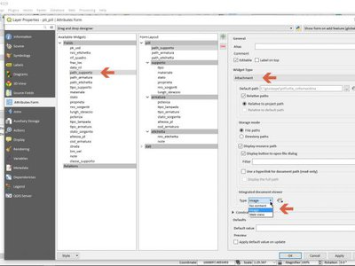
Feature: Removed otb and lidartools providers from processing¶
The new logic will be to develop plugin providers that will be able to follow the external software lifecycle.
User Interface¶
Feature: Enable tabbed floating docks¶
For qt > 5.6 builds, it is possible to drop several floating docks in the same floating window where they appear as tabs https://woboq.com/blog/qdockwidget-changes-in-56.html

Feature: Add support for fine-resolution mouse wheel zooming¶
Some mouse / pointer devices (notably on mac) have finer resolutions. They send mouse wheel events at a high frequency but with smaller delta values. Zooming with such devices was unusable for fast zoom actions. This has been fixed in 3.0.
This feature was developed by Matthias Kuhn
Feature: add search bar to the Configure Shortcuts dialog¶
Supports search by action name and by shortcut

This feature was developed by Alexander Bruy
Feature: Locator bar¶
The Locator bar is a fast, always ready, generic and pluggable search facility in the Left Bottom corner of QGIS.
Currently it is able to search for algorithms, actions and layer names, but also to select a feature in current active layer by typing an attribute value.
It is ‘easy’ extendable, so everybody can create a QgsLocatorFilter for his/her national geocoding service or other search online or database search facility.

This feature was developed by Nyall Dawson
Feature: More non-blocking, inline editing¶
map unit scaling
color brewer and limited random ramp editors
editing colors in a color list inline in the style panel
inline editing of colors and symbols in composer
now shown inline in style panel
Feature: Color setting for map canvas north arrow decoration¶
Color setting has been added for all map canvas north arrow decoration.

This feature was developed by Mathieu Pellerin
Feature: Improved map canvas’ save as image¶
The map canvas’ save as image function has been expanded and now offers users the possibility to tweak the scale, resolution, and extent on-the-fly. Extents can be restricted to a height-width ratio. A save as PDF function was also added to quickly export the map canvas into a resolution-independent PDF.

This feature was funded by Andreas Neumann (partial funding)
This feature was developed by Mathieu Pellerin
Feature: Toggle visibility of opened panels in main window¶
Accessible via: - View menu > Toggle Panels Visibility - Ctrl+Tab keyboard shortcut
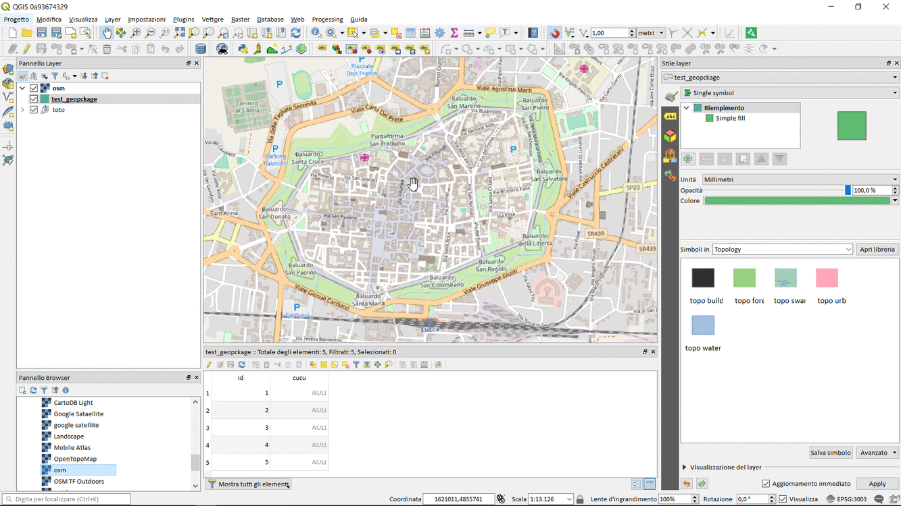
This feature was developed by Mathieu Pellerin
Feature: Improved consistency to the user interface¶
This work sponsored by the QGIS grant program on “adding consistency to UI controls” is now complete and merged into master. The following tasks were done as part of this work:
All API regarding transparency/opacity/alpha was standardised to setOpacity() and opacity(). The methods take a double value between 0 (transparent) and 1 (opaque), keeping consistency with the Qt API.
A new widget QgsOpacityWidget was created, and is now used everywhere through the UI where opacity is set. This ensures consistent behavior and look for opacity controls everywhere.
Rotation has been standardised in the API and UI, so now rotation is always applied clockwise. All rotation widgets have been updated so they accept values from -360 to 360.
2.x Projects with labeling using rotation and data defined rotation are transparently upgraded upon opening in 3.0
Scale APIs have been made consistent throughout the QGIS API. The confusing mix of scale denominators vs real scales has been removed, with everything now operating on scale denominators. The behaviour of all scale range calls is standardised with a common meaning for min/max scales (and explicit api documentation regarding this)
All scale controls now use the standard scale widgets for consistency across the UI
Labeling now uses the same definition for min/max scale as the rest of the UI, and existing projects are transparently upgraded on opening in 3.0.
Fixed most outstanding bugs relating to scale usage, including bugs breaking the rule based scale limits
Thanks to the QGIS PSC and project donors for sponsoring this work and allowing it to proceed!
This feature was funded by QGIS Sponsors and Donors
This feature was developed by Nyall Dawson
Feature: Open layers in a single group¶
If you try to open many sublayers, you can now open them all within a same group in the legend.

This feature was funded by Kartoza
This feature was developed by Etienne Trimaille
3D Features¶
Feature: 3D map view and terrain generation¶
We have a brand new native 3D map view in QGIS! The 3D map view displays 2D map (rendered from project layers) on top terrain. By default the terrain is a flat plane, but it is possible to use raster layers with digital elevation model as the source of height data.
Use menu View > New 3D Map View to add a 3D view of the project. This will create a new dock widget with 3D map canvas. The 3D view uses the same controls like 2D map views to browse the map using mouse (drag map to move it around, mouse wheel to zoom) or keyboard arrow keys. In addition there are camera controls specific to 3D views: it is possible to rotate and tilt camera by one of the following ways:
by dragging the mouse with middle mouse button pressed
by pressing Shift and dragging the mouse with left mouse button pressed
by pressing Shift and using up/down/left/right keys
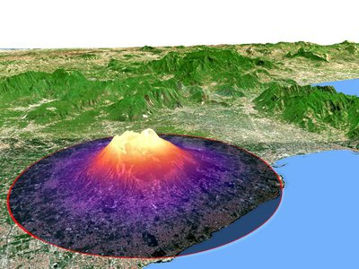
This feature was funded by QGIS.ORG
This feature was developed by Martin Dobias (Lutra Consulting)
Feature: 3D renderers for map layers¶
In the default configuration, map layers are rendered into 2D map images on top of the terrain. It is however possible to make better use of the 3D world by configuring 3D renderers for some map layers. With 3D renderers, the data can be displayed in 3D views as true 3D objects - this is currently supported for vector layers (all geometry types - point, line or polygon). This enables much better visualization, for example:
polygons with building footprints may be extruded (possibly with data-defined height) to achieve 3D look
points with tree point locations can be rendered with 3D symbols of trees (simple geometric shapes or existing 3D models loaded from a supported file format)
To configure 3D renderers, use layer styling dock widget or the vector layer properties dialog - there is a new tab for configuration of 3D renderers.
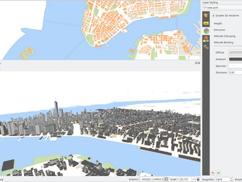
This feature was funded by QGIS.ORG
This feature was developed by Martin Dobias, Peter Petrik (Lutra Consulting)
Expressions¶
Feature: New expression variables¶
Adds @project_crs and @project_crs_definition variables for retrieving the current project CRS
Feature: new global expression variable @qgis_locale¶
Returns current locale used by QGIS. By default this is current system locale. If user enabled locale override in QGIS settings overriden locale will be returned.

This feature was developed by Alexander Bruy
Feature: New expression variables for map settings¶
- map_crs, map_crs_definition: retrieves crs details for map
- map_units: retrieves units for map (eg 'meters','degrees')
This feature was funded by North Road
This feature was developed by Nyall Dawson (North Road)
Feature: New expression functions¶
Atlas expressions
atlas_layerid and atlas_layername: Returns layer ID and layer name of the current layer in the atlas.
Aggregate expressions
array_agg(expression, group_by, filter): Returns an array of aggregated values from a field or expression.
Array expressions
New group that contains expression functions for the creation and manipulation of arrays (also known as list data structures). The order of values within the array matters, in contrary to the ‘map’ data structure, where the order of key-value pairs is irrelevant and values are identified by their keys.
array(value1, value2, …) : Returns an array containing all the values passed as parameter.
array_append(array, value): Returns an array with the given value added at the end.
array_cat(array1, array2, …): Returns an array containing all the given arrays concatenated.
array_contains(array, value): Returns true if an array contains the given value.
array_distinct(array): Returns an array containing distinct values of the given array.
array_find(array, value): Returns the index (0 for the first one) of a value within an array. Returns -1 if the value is not found.
array_first(array): Returns the first value of an array.
array_get(array, index): Returns the Nth value (0 for the first one) of an array.
array_insert(array, pos, value): Returns an array with the given value added at the given position.
array_intersect(array1, array2): Returns true if any element of array1 exists in array2.
array_last(array): Returns the last value of an array.
array_length(array): Returns the number of elements of an array.
array_prepend(array, value): Returns an array with the given value added at the beginning.
array_remove_all(array, value): Returns an array with all the entries of the given value removed.
array_remove_at(array, pos): Returns an array with the given index removed.
array_reverse(array): Returns the given array with array values in reversed order.
array_slice(array, start_pos, end_pos): Returns a portion of the array. The slice is defined by the start_pos and end_pos arguments.
array_to_string(array, delimiter, empty_value): Concatenates array elements into a string separated by a delimiter using and optional string for empty values.
regexp_matches(string, regex, empty_value): Returns an array of all strings captured by capturing groups, in the order the groups themselves appear in the supplied regular expression against a string.
string_to_array(string, delimiter, empty_value): Splits string into an array using supplied delimiter and optional string for empty values.
Color expressions
create_ramp(map, discrete): Returns a gradient ramp from a map of color strings and steps.
Date and Time expressions
epoch(date): Return the interval in milliseconds between the unix epoch and a given date value.
General expressions
env(name): Gets an environment variable and returns its content as a string. If the variable is not found, NULL will be returned.
raster_statistic(layer, band, property): Returns statistics from a raster layer. Properties: min/max/avg/range/stdev/sum
with_variable(name, value, node): This function sets a variable for any expression code that will be provided as 3rd argument. This is only useful for complicated expressions, where the same calculated value needs to be used in different places.
Geometry expressions
extend(geometry, start_distance, end_distance): Extends linestrings by a specified amount at the start and end of the line
hausdorff_distance(geometry a, geometry b, densify_fraction): Returns the Hausdorff distance between two geometries. This is basically a measure of how similar or dissimilar 2 geometries are, with a lower distance indicating more similar geometries.
inclination(inclination(point_a, point_b): Returns the inclination measured from the zenith (0) to the nadir (180) on point_a to point_b.
make_circle(center, radius, segment): Creates a circular, segmentized, polygon.
make_ellipse(center, semi_major_axis, semi_minor_axis, azimuth, segment): Creates an elliptical, segmentized, polygon.
make_regular_polygon(center, radius, number_sides, circle): Creates a regular polygon.
make_triangle(): help still missing
minimal_circle(geometry, segment): Returns the minimal enclosing circle of a geometry. It represents the minimum circle that encloses all geometries within the set.
offset_curve(geometry, distance, segments, join, miter_limit): Returns a geometry formed by offsetting a linestring geometry to the side. Distances are in the Spatial Reference System of this geometry.
oriented_bbox(geom): Returns a geometry which represents the minimal oriented bounding box of an input geometry.
pole_of_inaccessibility(geometry, tolerance): Calculates the approximate pole of inaccessibility for a surface, which is the most distant internal point from the boundary of the surface. This function uses the ‘polylabel’ algorithm (Vladimir Agafonkin, 2016), which is an iterative approach guaranteed to find the true pole of inaccessibility within a specified tolerance.
simplify(geometry, tolerance): Simplifies a geometry by removing nodes using a distance based threshold (ie, the Douglas Peucker algorithm). The algorithm preserves large deviations in geometries and reduces the number of vertices in nearly straight segments.
simplify_vw(geometry, tolerance): Simplifies a geometry by removing nodes using an area based threshold (the Visvalingam-Whyatt algorithm). The algorithm removes vertices which create small areas in geometries, e.g., narrow spikes or nearly straight segments.
smooth(geometry, iterations, offset, min_length, max_angle): Smooths a geometry by adding extra nodes which round off corners in the geometry.
single_sided_buffer(geometry, distance, segments, join, miter_limit): Returns a geometry formed by buffering out just one side of a linestring geometry. Distances are in the Spatial Reference System of this geometry.
Layer Property
crs_description returns the CRS description of the layer.
Map Expressions
This group contains expression functions for the creation and manipulation of ‘map’ data structures (also known as dictionary objects, key-value pairs, or associative arrays). One can assign values to given keys. The order of the key-value pairs in the map object is not relevant.
map(key1, value1, key2, value2, , …): Returns a map containing all the keys and values passed as pair of parameters.
map_akeys(map): Returns all the keys of a map as an array.
map_avals(map): Returns all the values of a map as an array.
map_concat(map1, map2, …): Returns a map containing all the entries of the given maps. If two maps contain the same key, the value of the second map is taken.
map_delete(map, key): Returns a map with the given key and its corresponding value deleted.
map_exist(map, key): Returns true if the given key exists in the map.
map_get(map, key): Returns the value of a map, given it’s key.
map_insert(map, key, value): Returns a map with an added key/value.
Map Layers
New group that contains a list of map layers available in the current project. Returns internal map layer ids. This is used in many other expression functions that reference map layers.
Math expressions
inclination(point_a, point_b): Returns the inclination measured from the zenith (0) to the nadir (180) on point_a to point_b.
Operators
~: Performs a regular expression match on a string value.
Record and Attributes Expressions
renamed from just “Record”
get_feature_by_id(layer, feature_id): Returns the feature with an id on a layer.
is_selected(feature, layer): Returns if a feature is selected. If called with no parameters checks the current feature.
num_selected(layer): Returns the number of selected features on a given layer. By default works on the layer on which the expression is evaluated.
represent_value(value, fieldName): Returns the configured representafftion value for a field value. It depends on the configured widget type. Often, this is useful for ‘Value Map’ widgets.
uuid(): Generates a Universally Unique Identifier (UUID) for each row using the Qt QUuid::createUuid method. Each UUID is 38 characters long.
Relations
New group listing all available table relations in a project. Useful for relation_aggregate functions.
Deprecated
$scale: old variable to get current map scale. Replaced by maps_scale
Changes
Change in substr() function
support negative start value (e.g. substr(‘hello’,-2) returns ‘lo’)
support negative length value (e.g. substr(‘hello’,3,-1) returns ‘ll’)
length parameter now optional, defaults to end of string (e.g. substr(‘hello world’,7) returns ‘world’)
strpos() now relies on a simple string within a string search
regexp_match() now returns pos of a matching regular expression
This feature was developed by numerous developers
Feature: Expose @parent variable in aggregate functions¶
This makes it possible to access attributes and geometry from the parent feature when in the filter of the “aggregate” expression function. With this in place aggregates can be calculated per feature.
E.g. max "measurement" for each point_station per polygon_research_area.
Or a default attribute value when digitizing features:
aggregate(layer:='countries', aggregate:='max', expression:=\"code\", filter:=intersects( $geometry, geometry(@parent) ) )

This feature was developed by Matthias Kuhn (OPENGIS.ch)
Feature: Item_variables expression function inside compositions¶
This adds a new item_variables expression function when expressions are used inside a composition context.
The function takes a single argument, the id for an item inside the composition, and returns a map of variable name to value for that item. This allows you to do things like insert text in a label fetching properties of another item in the composition, eg
Insert scale of map into a label:
map_get( item_variables( 'map'),'map_scale')
Insert x coordinate of map center into a label:
x(map_get( item_variables( 'map'),'map_extent_center'))
This feature was funded by North Road
This feature was developed by Nyall Dawson (North Road)
Documentation¶
Feature: Processing algorithms enhancements¶
Processing algorithms have been reviewed and documented. Clicking the Help button will open the QGIS website and show the algorithm description with enhanced documentation and pictures.

This feature was funded by QGIS Grant Proposal
This feature was developed by Matteo Ghetta (Faunalia), Alexander Bruy
Symbology¶
Feature: Data defined symbol layer visibility¶
Adds a data defined override to control a symbol layer’s visibility. Allows users to disable drawing certain symbol layers for matching features.
This feature was funded by North Road
This feature was developed by Nyall Dawson (North Road)
Feature: save and restore color ramp used for singleband pseudocolor rendering¶
This feature was developed by Alexander Bruy
Feature: Add Points and Inches to available symbol units¶
This feature was funded by North Road
This feature was developed by Nyall Dawson (North Road)
Feature: Style management re-work and upgrade¶
Style management has received a major upgrade. The improvements include:
A new favorite grouping system was added, which the symbols list widget defaults to
The selected tag / smartgroup in the symbols list widget now persists when switching layers (and across sessions)
The symbols list widget will update the tag / smartgroup combo box when users add / rename / remove categories
Users can now directly tag, as well as add to favorites, symbols while saving those to the style database
To streamline style management, groups have been removed and fully replaced by tags
Tags have been integrated into the import/export user interface
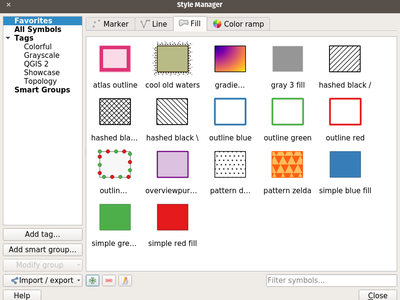
This feature was developed by Mathieu Pellerin
Feature: Support setting of color and transparency on multiple items for raster renderers¶
It is now possible to change the color and transparency for multiple values at the same time for the singleband pseudocolor and the paletted renderers. Simply select values within the values’ list and right click to have a pop-up menu appear.

This feature was developed by Mathieu Pellerin
Feature: Show an alpha slider in color button drop down menu¶
Allows quick tweaks to the color alpha

This feature was funded by North Road
This feature was developed by Nyall Dawson (North Road)
Feature: Raster stretch toolbar actions support for pseudocolor renderer¶
This feature was developed by Mathieu Pellerin
Feature: Transparency support for paletted renderer¶
In QGIS 3.0, it is now possible to change the transparency value for unique values for the paletted renderer.

This feature was developed by Mathieu Pellerin
Feature: raster auto-stretching when updating canvas¶
see https://lists.osgeo.org/pipermail/qgis-developer/2016-September/044393.html follow up to raster pseudocolor updated extent auto classification.
This feature was developed by Even Rouault
Feature: Control over annotation contents margins¶
Allows setting left/top/right/bottom margins for the contents within an annotation.
This feature was funded by North Road
This feature was developed by Nyall Dawson (North Road)
Feature: Annotations can be styled using fill symbol styles¶
This changes the rendering of annotation frames to use QGIS’ symbology engine, which means that all the existing fill styles can now be used to style annotation frames.
Also paint effects & data defined symbol parameters.
This feature was funded by North Road
This feature was developed by Nyall Dawson (North Road)
Feature: Point cluster renderer¶
New symbol renderer that groups nearby points into a single rendered marker symbol. Optionally, a label displays the number of features that have been aggregated into the single symbol.
Additionally, some improvements have been made to the point displacement renderer, specifically:
points are now assigned to the group which is “nearest” them, rather then just assigning them first group within the search distance. In some cases this was assigning features to a more distant cluster, resulting in less predictable cluster patterns
individual points are now correctly shown in their own selection state
lots of code cleanup + documentation too.
For developers: QgsPointDisplacementRenderer has been split into a new pure virtual QgsPointDistanceRenderer base class which handles the detection of clusters and grouping of points. The new cluster renderer reuses this base class to avoid code duplication.
See the crowd funding programme for more details.
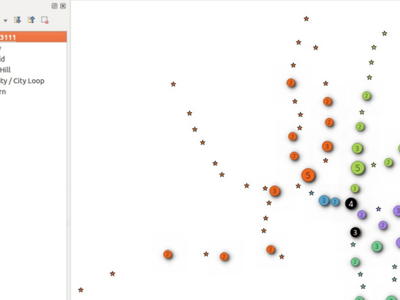
This feature was funded by Andreas Neumann, Qtibia Engineering (Tudor Barascu), Karl-Magnus Jönsson, Geonesia (Nicolas Ponzo) & numerous additional anonymous backers whose generous contributions are also highly valued!
This feature was developed by Nyall Dawson
Feature: NEW MAP COLORING ALGORITHMS IN QGIS 3.0¶
see http://nyalldawson.net/2017/02/new-map-coloring-algorithms-in-qgis-3-0/

This feature was developed by Nyall Dawson
Feature: New “preset” colors color ramp option¶
Allows use of a color ramp consisting of a list of selected colors. Currently there’s no way in QGIS to classify a renderer using some list of colors you’ve previously selected. So you can modify the colors manually after classifying, but that’s a pain if you’re regularly using the same color scheme. Basically, it’s like the color brewer color ramp options but allowing users to pick their own preset list of colors to use (Because Cynthia Brewer isn’t the only cartographic color expert!)
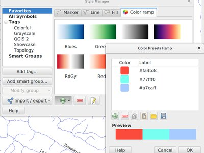
This feature was funded by North Road
This feature was developed by Nyall Dawson (North Road)
Feature: Allow symbol layers to be temporarily disabled¶
Adds a new checkbox at the bottom of each symbol layer’s properties which allows you to control whether the layer is enabled or not. Disabled layers are not drawn, but are saved and can be enabled at a later stage. This makes it easier to tweak symbol appearance without having to totally delete a symbol layer.

This feature was funded by North Road
This feature was developed by Nyall Dawson (North Road)
Feature: Easy styling of discrete rasters¶
In QGIS 3.0, the existing raster Paletted Renderer for rasters was adapted to allow for easy styling of discrete raster layers, such as landcover or boolean rasters. Now, users can select the renamed “Paletted/Unique Values” renderer and click the “Add Unique Values” button to load all unique raster values from the layer. These are automatically assigned a color using the selected color ramp.
The unique value calculation is performed in a background thread to keep the UI responsive for large (or remote) raster layers. Additionally, users can manually add individual new classes as desired, and edit the associated pixel value for any existing class. Deleting multiple classes at once is also supported, as well as changing the color, transparency and labels for multiple classes at once.
Color palettes can be loaded from a text file, with ESRI clr/GDAL/GRASS color table formats supported. Color palettes can be saved to a clr text file for sharing.
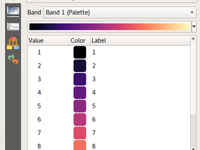
This feature was funded by Stéphane Henriod, Satelligence (http://satelligence.com/), Bird’s Eye View (https://www.birdseyeviewgis.com/), other anonymous backers
This feature was developed by Nyall Dawson (North Road)
Labelling¶
Feature: Allow label font size in mm/pixels¶
This feature was funded by North Road
This feature was developed by Nyall Dawson (North Road)
Feature: Custom labelling toolbar is now always enabled¶
Thanks to the awesome auxiliary data storage and the editable joined table, the manual label customization is now always enabled. You do not need anymore to add dedicated fields in your datasource to change labels position, rotation, or any of the possible settings for labels to activate the toolbar. No more copy of readonly datasources and so much faster labeling ! Be warned, labels are only saved along with your project file in a .qgd sqlite database, or inside the .qgz zipped project file if you chose that format. Don’t forget to share that .qgd file if you want to share your project file.
And for power users, the old way of having data defined fields in your datasource is still there. Just define them in the layer’s properties as before!
This feature was funded by French ministry of Ecology and Sustainable Developpement
This feature was developed by OSLANDIA - Paul Blottiere
Diagrams¶
Feature: Data definable properties¶
Add support for more data definable properties to diagrams:
Distance
Priority
ZIndex
IsObstacle
Show
AlwaysShow
Diagram Start Angle
This feature was funded by QGIS Grant Program
This feature was developed by Nyall Dawson (North Road)
Rendering¶
Feature: Live layer support¶
QGIS 3.0 now supports live layers. These layers get re-rendered automatically at a time interval that you determine, in a clean and flicker free way. Live layers are great for tracking continuously changing data like a fleet of cars, a flock of birds that you have telemetry data for and so on.
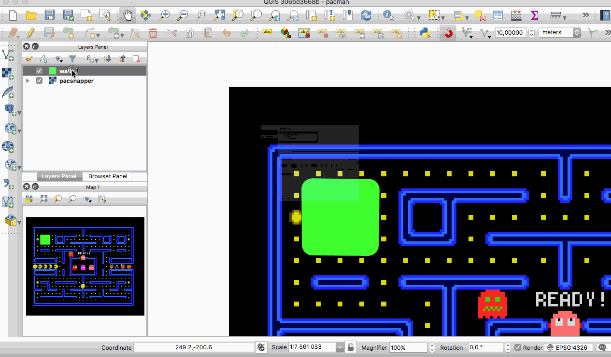
This feature was developed by Kartoza & North Road
Feature: Trigger layer refresh or layer actions from PostgreSQL NOTIFY signal¶
Following the live layer effects, this allows to trigger actions or layer refresh in QGIS only when the database notifies QGIS it should do something. It will require less ressources than refreshing on interval, and you can even code a chat application in QGIS with that :)
See https://vimeo.com/236604742
http://oslandia.com/en/2017/10/07/refresh-your-maps-from-postgresql/
This feature was funded by QGIS.org Grant application
This feature was developed by OSLANDIA - Vincent Mora
Feature: Cache labeling result to avoid unnecessary redraws when refreshing canvas¶
This change allows the labeling results to be cached to an image following a map render. If the cached label result image can be reused for the next render then it will be, avoiding the need to redraw all layers participating in the labeling problem and resolving the labeling solution. Basically this means that canvas refreshes as a result of changes to any NON-LABELED layer are much faster. (Changing a layer which is part of the labeling solution still requires all labeled layers to be completely redrawn)
This feature was developed by Nyall Dawson (North Road)
Feature: Grid renderer for points displacement¶
Grid renderer for points displacement
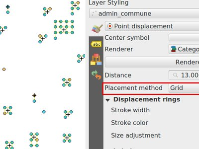
This feature was developed by Muhammad Yarjuna Rohmat (Kartoza)
Digitising¶
Feature: Range vertex selection in node tool¶
That feature makes it possible to select a range of vertices from one feature.
It can be activated by pressing Shift+R - afterwards one needs to click start and final point within a feature - this will selected all vertices between the two.
The range selection can be cancelled anytime by right-click or by pressing Esc key.
For closed curves (polygons), it is possible to switch to the “longer” way around the ring by holding Ctrl while clicking the final point.

This feature was funded by French ministry in charge of ecology
This feature was developed by Martin Dobias (Lutra Consulting)
Feature: Add default Z value option¶
Create Geopackages/Shapefiles: Now with the option to have Z-values

This feature was developed by Alexander Lisovenko / Paul Blottiere
Feature: Move feature now benefits from Advanced Digitizing¶
Just move a feature using the new “click - click ergonomy” and use the advanced digitizing panel and shortcut to constraint angles, distances, exact XY.
This feature was developed by Denis Rouzaud
Feature: Added functionality to copy/move feature to move feature map tool¶
This allow to duplicate feature and move them in one move from a selected feature
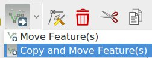
This feature was developed by Denis Rouzaud
Feature: Tracing with offset¶
You can now use the trace digitising tool with an offset as shown in the accompanying image.
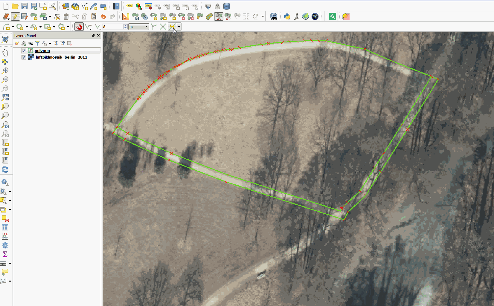
This feature was funded by d.b.g. Datenbankgesellschaft mbH
This feature was developed by Martin Dobias
Feature: Overhaul of the Vertex tool¶
The Node tool (now renamed to Vertex tool) has undergone a complete rework to make it more flexible. Some of the more important changes are:
Instead of requiring users to first select a feature and then edit its vertices in the second step, the tool now capable of working with multiple features at the same time. It is therefore easy to select vertices from several features and move or delete them at once. If there is a need to constrain selection of vertices to just specific feature(s), it is possible to select the features with selection tool first - the vertex tool will only work with vertices from selected feature(s) in such cases.
Instead of working just with the currently selected layer, the tool is now able to work with all layers that are in editing mode at the same time. Moving of features that logically belong together but are located in different layers has got much easier. Still, the current layer is respected if there are multiple choices when picking vertices.
Features and their vertices get highlighted as the user moves the mouse pointer over them, giving better visual feedback.
In QGIS 2.x the vertices would be moved by clicking a vertex, dragging it with the left mouse button still pressed and finally dropping them by releasing the mouse button. This behavior has been changed to “click-click” approach where user first clicks a vertex to pick it, then drag it without having any mouse buttons pressed and drop it by clicking again on the final destination. The arguments for this change were the following:
it is easier to precisely place nodes (not having to apply force to the mouse button all the time)
one does not move nodes inadvertently
it is possible to cancel the operation
it allows to pan the map by pressing space bar while the node is being moved
See https://github.com/qgis/QGIS-Enhancement-Proposals/issues/69 for more information.
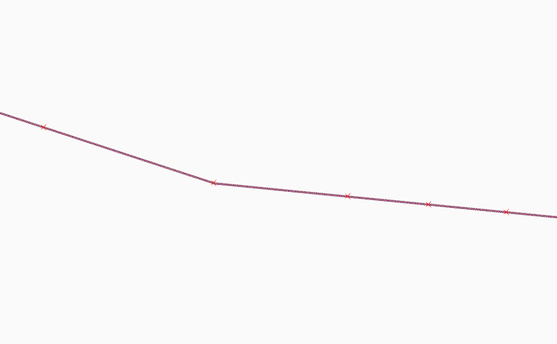
This feature was funded by QWAT
This feature was developed by Martin Dobias (Lutra Consulting)
Feature: Vertex tool: mid-point markers to add vertices¶
The improved vertex tool now also displays extra markers on the mid-point of line segments of features. Clicking such marker results in addition of a new vertex. The existing way of adding vertices by double-clicking segments has been kept.
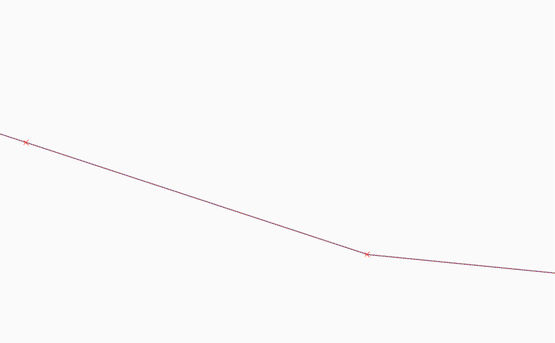
This feature was funded by QWAT
This feature was developed by Martin Dobias (Lutra Consulting)
Feature: Vertex tool: continue line¶
When editing linestring geometries with the vertex tool, moving the mouse towards the first or the last vertex will display an extra marker just next to the endpoint. Clicking the marker will add a vertex at the end of the geometry.
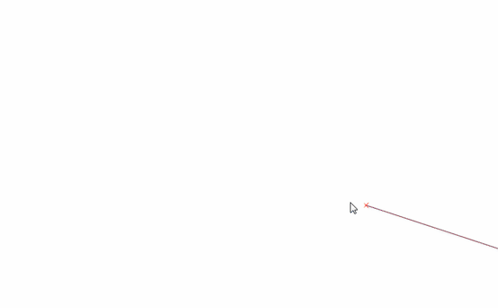
This feature was funded by QWAT
This feature was developed by Martin Dobias (Lutra Consulting)
Feature: Vertex tool: support for advanced digitizing panel¶
The advanced digitizing panel now works also with the vertex tool - it is possible to enter coordinates of new or existing vertices in the panel just like in other digitizing map tools.

This feature was funded by QWAT
This feature was developed by Martin Dobias (Lutra Consulting)
Data Management¶
Feature: Pan to current feature in attribute table¶
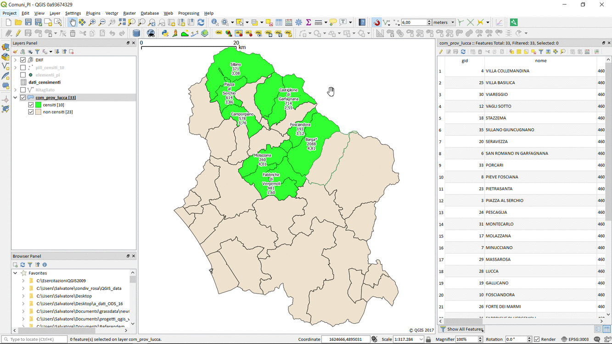
This feature was developed by Marco Hugentobler
Feature: Map of CRS-extent in Project properties¶
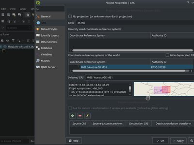
Feature: Auxiliary Storage Support¶
A new tab is available in vector layer properties to manage auxiliary storage :
A new action Store data in the project is available in the data defined menu providing an easy way to manage auxiliary data for a property :
Auxiliary data is stored in a sqlite database and managed thanks to the OGR data provider (instead of the spatialite provider) to keep as small as possible the database file. This database file (with extension .qgd) is either saved just next to the project file or directly embedded within the new .qgz format.
See the original pull request and this article which explains more
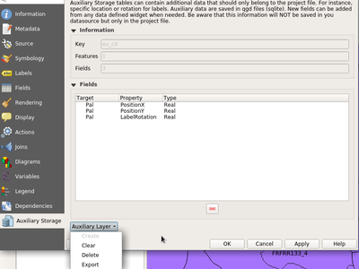
This feature was developed by Paul Blottiere / Oslandia
Feature: Metadata overhaul¶
The metadata system in QGIS has been overhauled. In QGIS 3.0 we introduce our own internal, formalised metadata schema which is separate from the QGIS project file format. We introduce new API capabilities for reading and writing metadata for layers. We have separated the display of metatadata from the editing and have added a new metadata editing tool. Metadata are currently saved in the project file. It can also be saved as an XML file alongside file based layers or in a local sqlite database for remote layers (e.g. PostGIS).
you can read more about the design considerations adopted in this work by referring to the QGIS Enhancement Proposal (QEP) - QEP-92
Please note this is the first phase in the development of a complete and standards compliant metadata infrastructure for QGIS. We are seeking further funding to implement a more complete implementation for the metadata system - see this document for details of future planned work packages that need funding.
The specification for the QGIS metadata schema is here.
The primary funder for this work was The WorldBank/GFDRR with supporting funding provided by NINA.

This feature was funded by WorldBank/GFDRR
This feature was developed by Kartoza and collaborators
Feature: Unified data source manager dialog¶
A single unified dialog to handle data source management and layers loading.

This feature was funded by Boundless
This feature was developed by Alessandro Pasotti
Feature: OSM Downloader tool removed¶
We have removed the OSM downloader tool that was provided in 2.x releases of QGIS. We encourage you to rather use the QuickOSM plugin which has been ported to QGIS 3.0.
Forms and Widgets¶
Feature: Allow controlling labels for individual edit widgets¶
In the drag and drop designer, a double click on an item will allow controlling if the label should be shown for each item individually.
This feature was developed by Matthias Kuhn
Feature: conditional visibility for tabs and groupboxes¶
This adds a new configuration option to conditionally show or hide tabs and groupboxes in drag and drop designer forms. Configuration is done via a double click in the designer tree in the fields configuration interface. An expression can be entered to control the visibility. The expression will be re-evaluated everytime values in the form change and the tab or groupbox shown/hidden accordingly.
This feature was developed by Matthias Kuhn
Feature: Smarter default edit widgets with plugins to pick them¶
Now the widgets can give a score on how well they could handle the type of a field. Leading to better default widgets.
Additionally, plugins can be added to choose a widget type in function of external information. One of them uses a table in PostgreSQL, allowing to specify the widget type and configuration to use for each field.
Automatically pick RelationReference widgets for foreign keys.
This feature was developed by Patrick Valsecchi
Feature: Field constraints can be enforced or not¶
Non-enforced constraints just show a warning to the user, but do not prevent committing the feature. Enforced constraints block users from committing non compliant features. So we have soft warnings now! Any constraints detected by the provider are always enforced.
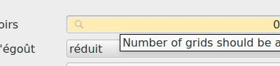
This feature was funded by OpenGIS.ch
This feature was developed by Nyall Dawson (North Road)
Feature: Add layer scoped actions¶
Within the attribute table, there is a new button to trigger actions which are not based on individual features but instead on the whole layer. Normally they will perform actions based on all features or the selection.
This feature was developed by Matthias Kuhn
Feature: Show field values in autocompleter in form filter mode¶
The autocompleter is nicely updated in the background so that the gui remains nice and responsive, even if there’s millions of records in the associated table.
It’s now used as a search widget for text fields, so can be seen in the browser window if you set the filter to a text field, or if you launch the form based select/filter by selecting a layer and pressing F3.
This feature was funded by North Road
This feature was developed by Nyall Dawson (North Road)
Feature: Add zoom to features and flash features shortcuts in select by form dialog¶
Allows very quick navigation and identification of features which match the criteria in the form
This feature was funded by North Road
This feature was developed by Nyall Dawson (North Road)
Feature: Add between/not between to numerical fields in select by form¶
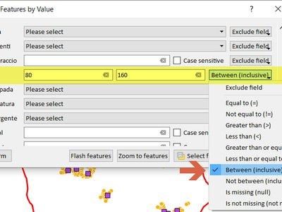
This feature was developed by Mathieu Pellerin
Layer Legend¶
Feature: Hide Deselected Layers action¶
Allows you to quickly hide all deselected layers. This is very handy when you have a large project and want to quickly hide all except for a couple of layers
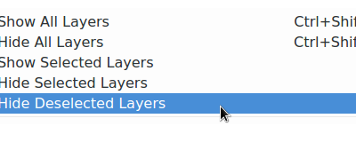
This feature was funded by SMEC (Surbana Jurong)
This feature was developed by Nyall Dawson (North Road)
Feature: Change of ergonomy of the visibility of layers inside groups¶
Checking/unchecking a group doesn’t change the check state of its children. A node is visible if and only if it is checked and all its parents too.
There is no more a semi-checked state for a group
Ctrl-clic on a unchecked group will check the group and all its descendants.
Clic on a unchecked layer will check the lager and all its parents.
Ctrl-clic on a checked group will uncheck the group and all its descendants.
Ctrl-clic on a checked layer will uncheck the layer and all its parents.
Those actions are available in contextual menu items in the tree view.
Invisible layers because they or their parent(s) is unchecked are greyed out.
This feature was developed by Even Rouault
Map Composer¶
Feature: Control over drawing of composer table grid horizontal & vertical lines¶
It is now possible to independently control horizontal and vertical line rendering of composer table items. This added flexibility expends the styling possibilities of this item directly within QGIS.

This feature was developed by Mathieu Pellerin
Feature: Drag qpt to QGIS to create new composer from template¶
This feature was funded by SMEC (Surbana Jurong)
This feature was developed by Nyall Dawson (North Road)
Feature: Allow customization of line spacing for composer legend item labels¶
This feature was developed by Mathieu Pellerin
Feature: Allow choice of CRS for map items¶
This allows the CRS for map items to differ from the canvas/project CRS. It also allows different map items to have different CRS, eg an overview map can be set to a different CRS to the main map.
This feature was funded by North Road
This feature was developed by Nyall Dawson (North Road)
Feature: Holding shift while drawing polyline/polygon constrains line angles¶
This feature was funded by North Road
This feature was developed by Nyall Dawson (North Road)
Feature: More data definable controls¶
Item frame and background colors Data defined svg colors and outline width for composer picture items (Especially useful when the picture is showing a north arrow!) Data defined legend titles and column count Data defined scalebar colors and line width
This feature was funded by QGIS Grant Program
This feature was developed by Nyall Dawson (North Road)
Feature: Map Composer Overhaul¶
This is a major rework to how compositions are managed in the code of QGIS.
Highlights are:
A new QgsLayoutManager class which is used for storage and serializing/deserializing of compositions. A QgsLayoutManager is attached to QgsProject. This allows core code to access the compositions attached to a project. All handling of compositions has been moved from app to core, making it easy for server (and other non-app based projects. QField/roam?) to access project compositions without resorting to fragile xml parsing.
Composer windows are created on demand and destroyed on close. This avoids the heavy requirement of creating all composer windows and widgets for every single composer item when loading projects. It was the main reason loading projects with compositions were so slow previously. Now, composer windows are created only when the window is opened and destroyed when the window is closed. Composer item configuration widgets are also only created on demand (when an item is selected) instead of precreating all widgets.
A side benefit of destroying composer windows on close is that we now no longer suffer from a Qt bug which blocked use of floating docks in composer windows. Now you can float the item/composition/etc panels! Much nicer for full screen working with compositions on multi-monitor setups.
Reworked API for working with composers through iface. Since composer windows don’t exist unless they are currently open, all the iface methods for interacting with composers have been redone to make it clear that they only apply to open windows. Additionally, a simple composer interface which provides a stable API for plugins and scripts to work with composer windows has been added. Very basic for now, but in future we can extend with more hooks to allow plugins to interact with composer windows.
Lots of code cleanups and removal
More info at https://north-road.com/qgis-layout-and-reporting-engine-campaign/
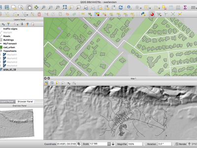
This feature was funded by The Swiss QGIS User Group and many more!
This feature was developed by Nyall Dawson (North Road)
Analysis Tools¶
Feature: Raster unique values count for processing¶
http://imhere-asia.com/blog/post/qgis-raster-layer-unique-values-count
This feature was developed by http://imhere-asia.com/
Processing¶
Feature: New algorithm for offsetting lines¶
This feature was funded by North Road
This feature was developed by Nyall Dawson (North Road)
Feature: New algorithm for single sided buffers¶
This feature was funded by North Road
This feature was developed by Nyall Dawson (North Road)
Feature: Add choice of simplification method to simplify¶
This change allows users to choose which method to use when running the simplify geometries algorithm, with choices of the existing distance based (Douglas Peucker) algorithm, area based (Visvalingam) algorithm and snap-to-grid.
Visvaligam in particular usually results in more cartographically pleasing simplification over the standard distance based methods.
This feature was funded by North Road
This feature was developed by Nyall Dawson (North Road)
Feature: support for output geometry types in models¶
Model child algorithm inputs are now filtered to only those which generate applicable geometry types for the input to another child algorithm
This feature was developed by Alexander Bruy
Feature: Angle threshold for smooth algorithm¶
Add option to QgsGeometry::smooth to not smooth segments shorter than a certain threshold or sharp corners with an angle exceeding a threshold
This feature was funded by North Road
This feature was developed by Nyall Dawson (North Road)
Feature: Better support for Z/M dimensions and curved geometries¶
Many more algorithms now respect Z/M values and do not discard this information, and additionally many algorithms now correctly maintain curved geometries without forced segmentization of these geometries.
Feature: Raster analysis algorithms added to Processing¶
The following algorithms were added to Processing from the Raster Analysis plugin:
Aspect
Slope
Ruggedness
Hillshade
Relief
Now these algorithms can be used in scripts, models and for batch processing.
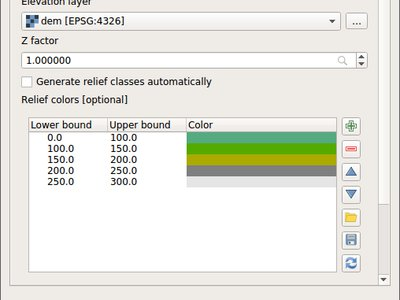
This feature was developed by Alexander Bruy
Feature: New algorithm to extract specific nodes¶
This algorithm allows you to extract specific nodes from geometries. Eg you can extract the first or last node in the geometry.
The algorithm accepts a comma separated list of node indices to extract, eg 0 = first node, 1 = second node, etc. Negative indices can be used to extract nodes from the end of the geometry. Eg -1 = last node, -2 = second last node.
This feature was funded by North Road
This feature was developed by Nyall Dawson (North Road)
Feature: Expose zonal statistics from Zonal statistics plugin in toolbox¶
This feature was developed by Alexander Bruy
Feature: Add a spatialite execute SQL algorithm¶
This feature was developed by Mathieu Pellerin
Feature: New algorithm to extend lines¶
Allows extending linestrings by a set distance at the start and end of the line
This feature was funded by North Road
This feature was developed by Nyall Dawson (North Road)
Feature: New extract by expression algorithm¶
Filters an input layer by expression
This feature was funded by North Road
This feature was developed by Nyall Dawson (North Road)
Feature: Add import into spatialite algorithm¶
This feature was developed by Mathieu Pellerin
Feature: Interpolation algorithms¶
Expose IDW and TIN interpolation from Interpolation plugin in toolbox
Interpolation plugin has been removed as a result
This feature was developed by Alexander Bruy
Feature: New algorithm to compute geometry by expression¶
This algorithm updates existing geometries (or creates new geometries) for input features by use of a QGIS expression. This allows complex geometry modifications which can utilise all the flexibility of the QGIS expression engine to manipulate and create geometries for output features.
This feature was funded by North Road
This feature was developed by Nyall Dawson (North Road)
Feature: Snap geometries to layer algorithm¶
Port the Geometry Snapper plugin to processing
Snap geometries algorithm allows snapping to other layer types, supports point/line layers
Snap to layer algorithm accepts a mode parameter. With a new option to prefer to snap to closest point on geometry. The old behaviour was to prefer to snap to nodes, even if a node was further from the input geometry than a segment. The new option allows you to snap geometries to the closest point, regardless of whether it’s a node or segment.
This feature was funded by North Road
This feature was developed by Nyall Dawson (North Road)
Feature: New input type for expressions¶
This adds a new input type for expression inputs. Expression inputs can be linked to a parent layer so that the builder shows the correct fields and layer variables.
It’s designed to be used when an algorithm specifically requires an expression, eg Select by Expression and Extract by Expression.
This feature was funded by North Road
This feature was developed by Nyall Dawson (North Road)
Feature: SplitWithLines¶
Rename algorithm SplitLinesWithLines to SplitWithLines Accept polygon as input, too Use only selected lines to split with (if processing is set to use selection only) Issue log message if trying to split multi geometries Update help
This feature was developed by Bernhard Ströbl
Feature: Pole of inaccessibility algorithm¶
Implements a processing algorithm to calculate the pole of inaccessibility for a surface, which is the most distant internal point from the boundary of the surface. This function uses the ‘polylabel’ algorithm (Vladimir Agafonkin, 2016), which is an iterative approach guaranteed to find the true pole of inaccessibility within a specified tolerance. More precise tolerances require more iterations and will take longer to calculate.
This feature was funded by North Road
This feature was developed by Nyall Dawson (North Road)
Feature: Extract by attribute can extract for null/notnull values¶
Adds support for filtering where an attribute value is null or not null
This feature was funded by North Road
This feature was developed by Nyall Dawson (North Road)
Feature: Create attribute index algorithm¶
Allows creation of an index on an attribute in a layer for faster attribute based filtering
Support depends on the underlying data provider for the layer
This feature was funded by North Road
This feature was developed by Nyall Dawson (North Road)
Feature: New ‘drop geometries’ algorithm¶
Simply removes any geometries from an input layer and returns the features with attributes only
This feature was funded by North Road
This feature was developed by Nyall Dawson (North Road)
Feature: New universal ‘basic stats for field’ algorithm¶
Replaces the existing ‘Basic Stats for Numeric Fields’ and ‘Basic Stats for String Fields’ algorithms and adds support for date/time/datetime fields.
Having a single unified algorithm allows more flexible models where a field type may not be known in advance.
This feature was funded by North Road
This feature was developed by Nyall Dawson (North Road)
Feature: Port heatmap plugin to processing algorithm¶
This feature was funded by North Road
This feature was developed by Nyall Dawson (North Road)
Feature: New algorithm to orthagonalize geometries¶
Adds a new algorithm which tries to make angles in geometries either right angles or straight lines
This feature was funded by North Road
This feature was developed by Nyall Dawson (North Road)
Feature: Network analysis algorithms¶
add shortest path and service area algorithms to Processing
also allow calculating shortest path from a point to all points in a layer, or from all points in a layer to an end point. And creating service areas for all points in a layer.
Roadgraph plugin has been removed as a result.
This feature was developed by Alexander Bruy
Feature: Export processing models as PDF/SVG¶
In addition to exporting processing models as bitmap images, it is now possible to export processing models as resolution-independent PDFs and SVGs. This allows for high-resolution export of models which can be embedded into papers and books being published.
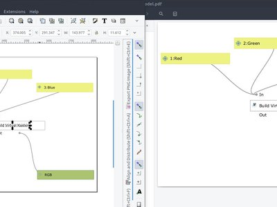
This feature was developed by Mathieu Pellerin
Feature: New algorithm to truncate tables¶
Irretrievably deletes all features from a table… use with caution!
This feature was funded by North Road
This feature was developed by Nyall Dawson (North Road)
Feature: Added ‘invalid feature handling’ option¶
This feature was developed by Victor Olaya
Feature: Algorithm to fix invalid geometries using native makeValid() implementation¶
This feature was developed by Alexander Bruy
Feature: Add search to Get Scripts and Models dialog¶
This feature was developed by Alexander Bruy
Feature: Generic centroid algorithm¶
Reworked centroid algorithm which handles non-polygon layers
This feature was funded by North Road
This feature was developed by Nyall Dawson (North Road)
Feature: Improved Extract nodes algorithm¶
Extract nodes algorithm now saves node index, distance along line and angle at node
This feature was funded by Andreas Neumann
This feature was developed by Nyall Dawson (North Road)
Feature: New algorithm for translating (moving) points¶
Allows geometries to be shifted by a x/y displacement
This feature was funded by North Road
This feature was developed by Nyall Dawson (North Road)
Feature: Improved processing modeler window¶
The processing modeler window has received a lot of attention for this release. Improvements include: - zoom controls in the window’s toolbar - customization of inputs and algorithms panels’ location - panels can now float above the processing window

This feature was developed by Mathieu Pellerin
Feature: New raster unique values report algorithm¶
A new algorithm was added to processing which returns the count and area of each unique value within a given raster layer.

This feature was developed by Mathieu Pellerin
Feature: Remove TauDEM provider from core Processing¶
We have removed the TauDEM provider from processing.
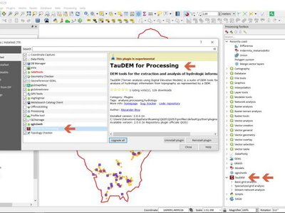
Feature: Download a file from Processing¶
Download a file from Processing. Query a remote API to get a geojson
This feature was developed by Etienne Trimaille
Feature: Optimised points along geometry algorithm¶
Supports also polygon geometries, handles null geometries, and records the original line angle along with the distance for each point.
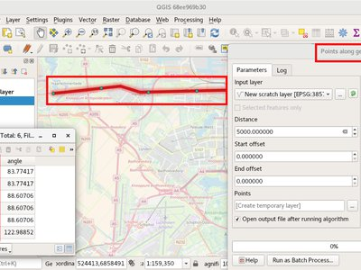
This feature was funded by Andreas Neumann
This feature was developed by Nyall Dawson (North Road)
Feature: Sort by expression algorithm¶
This feature was funded by DFAT/DMI
This feature was developed by Etienne Trimaille (Kartoza)
Application and Project Options¶
Feature: New zipped project file format .qgz¶
A long time ago on the developper’s mailing list, we discussed of a container storing the xml file and other ressources. This is now possible, though it remains optional. The auxiliary storage feature takes advantage of that by storing the associated .qgd sqlite database. We hope that in next versions land support for embedding other resources like SVG, color ramps, datasources, images, etc…

This feature was funded by French ministry of Ecology and Sustainable Developpement
This feature was developed by OSLANDIA - Paul Blottiere
Feature: Add support for user profiles¶
All user settings/plugins, etc are now loaded from the app data location for each platform and no longer .qgis3/2. Settings and plugins in each profile are now isolated from each other.
This allows for different runtime setups depending on what the user needs, e.g test, prod, demo, etc
Profile menu allows for switching between profiles or creating new ones.
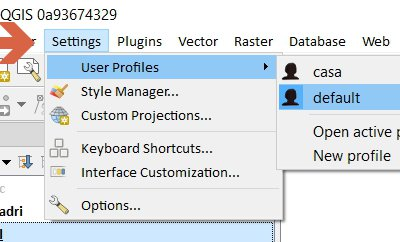
This feature was developed by Nathan Woodrow
Browser¶
Feature: Drag’n’drop layers from layer tree view to browser dock¶
Makes it easy to e.g. store your temporary layers in PostGIS
This feature was developed by Martin Dobias
Feature: Standalone QGIS Browser application removed¶
We have removed the standalone QGIS Browser application that shipped with QGIS 2.x. This application had poor user uptake and represented a maintenance overhead that we do not wish to continue with in the 3.0 code base.
Data Providers¶
Feature: New unified ‘add layer’ dialog¶
You can now use a single dialog to add a huge variety of data formats to QGIS.
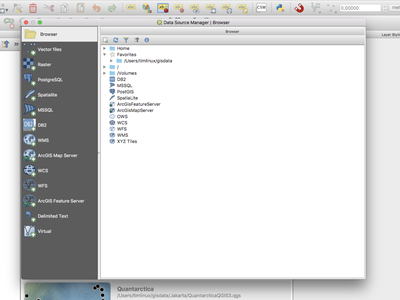
This feature was developed by Alessandro Pasotti
Feature: GeoPackage¶
processing uses pkg by default
save as uses pkg by default
create new layer uses pkg by default
browser drag and drop import layers
This feature was developed by Alessandro Pasotti
Feature: Support all GDAL writable raster formats for ‘Save as’ dialog on raster layers¶
This feature was developed by Nyall Dawson
Feature: Support for Z/M geometries in gpkg, spatialite and memory layer provider¶
Support for Z dimension and M values was added to QGIS’ gpkg, spatialite and memory layer provider. the option to add Z and M dimensions has also been added to the “create new layer” dialogs

This feature was funded by QWAT group, http://www.imhere-asia.com/
This feature was developed by Mathieu Pellerin, Alexander Bury, Paul Blottiere
Feature: Unique and not-null constraint handling¶
Automatic detection of provider-side unique and not-null constraints implemented for postgres, spatialite, ogr provider
Client side unique and not-null constraints can be set within QGIS.
Unique constraints are enforced in attribute form
This feature was funded by OpenGIS.ch
This feature was developed by Nyall Dawson (North Road)
Feature: GeoNode integration¶
GeoNode is an open source geospatial content management system that makes it easy to publish geospatial data on the web. QGIS 3.0 includes new functionality that will allow you to very easily add a GeoNode instance to the browser tree and add any layers from that site to your project as WMS, WFS or XYZ. There is no need to dig around trying to figure out WMS/WFS end points, QGIS will do everything for you. When using WMS and XYZ Tiled layers, the style of the published GeoNode layer will be used.
If the GeoNode instance uses the QGIS Server backend rather than a GeoServer backed, you can copy and paste styles from the server and apply them to your local layer so that your WFS layer renders exactly as it does on the server (as shown in the animated GIF here).
There are also python bindings so that you can add GeoServer layers to QGIS from your plugins. If you are interested in running your own GeoNode with QGIS Server backend please see this site for details on how you can do that using docker and rancher.
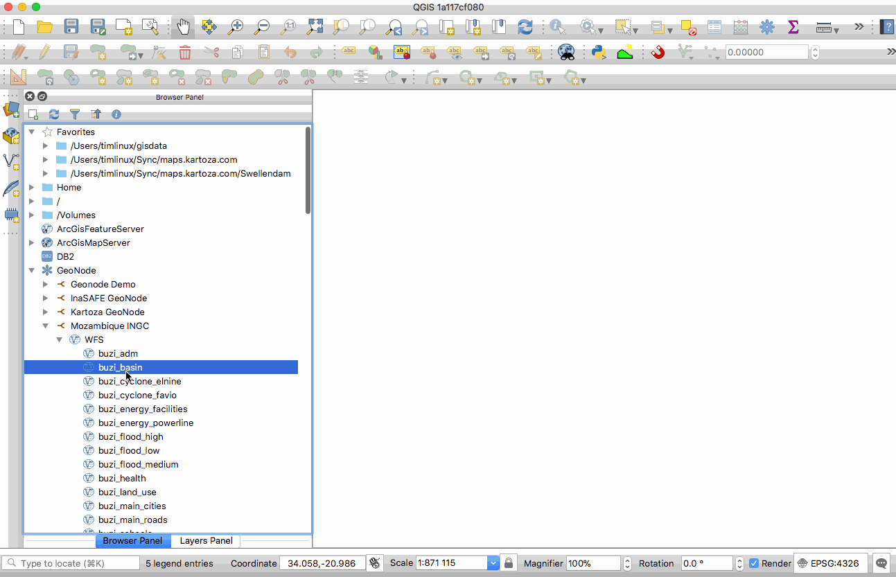
This feature was funded by WorldBank/GFDRR
This feature was developed by Kartoza
Feature: Detect literal default values for spatialite provider¶
This feature was funded by North Road
This feature was developed by Nyall Dawson (North Road)
Feature: Create attribute index support for spatialite provider¶
Allows creation of attribute indexes for spatialite layers
This feature was funded by North Road
This feature was developed by Nyall Dawson (North Road)
Feature: Add support for arrays¶
Supported by postgres, spatialite
This feature was developed by Patrick Valsecchi
Feature: Support for HStore in PostGIS data provider¶
Feature: Add auto-discovery of relations for PostgresQL¶
This feature was developed by Patrick Valsecchi
Feature: Data dependencies between layers¶
This allows to declare data dependencies between layers. A data dependency occurs when a data modification in a layer, not by direct user manipulation may modify data of other layers. This is the case for instance when geometry of a layer is updated by a database trigger after modification of another layer’s geometry.
This feature was developed by Hugo Mercier
Feature: dxf export: support reprojection¶
This feature was developed by Juergen E. Fischer
Feature: Load/save style in database for GPKG and Spatialite¶
This feature was developed by Even Rouault
Feature: Improved handling of defaults¶
Improve handling of defaults (inc provider default clauses, literal defaults, and QGIS expression defaults) and automatically handle unique value constraints on layers
Any fields with unique value constraints will be guaranteed to have a value which is unique to the field.
This also means that after certain editing operations (e.g. copy-paste, split features etc.) attributes will now be set to their default value, if applicable.
This feature was funded by Canton of Zug and the QGEP project
This feature was developed by Nyall Dawson (North Road)
QGIS Server¶
Feature: QGIS Server overhaul¶
As you may know, QGIS is jumping to a new major version (yes!). Doing so was made necessary because of the need to switch to python 3, QT5, but also because we needed to break the QGIS API in several places. (http://blog.qgis.org/2016/02/10/qgis-3-0-plans/)
A year ago, a tiny troll from switzerland rang a bell about the strong need for love server code base required. Indeed, the API was locked by some old methods of QGIS server. In short, QGIS server was reparsing the qgs project file in his own way, and created dependencies to part of QGIS we needed to drop.
As outsourcing the server code base was not an option, so we had to refactor it. The involved parties decided to get engaged in a code sprint in the city of Lyon, France dedicated to sharing their vision, planning the work and finally making all the following happen:
Higher level refactoring
All services (WMS GetMap, WFS GetFeature, GetLegendGraphics, WCS, GetPrint etc..) have been rewritten. Some like WMS were entirely rewritten. Kudos to the devs!
New features
Multi-thread rendering like in the desktop
A new option to trust layer metadata and thus speed up project loading
WFS 1.1 support https://github.com/qgis/QGIS/pull/5297
Full Python bindings for the server API
Server Services as plugins like providers
Deep, complex and unrewarding tasks
Remove all singleton calls
Cut all the dependencies to the old QGIS project file parser
Minimize dependencies to GUI library. Since fonts are necessary to render maps, totally removing them was not feasable.
Infrastructure tasks
Build a OGC compliancy platform and integrate it to a continuous integration platform. Conformity reports are now pushed to tests.qgis.org
Add unit tests … and again more unit tests
Stress QGIS server against security leaks (SQL injections and other malicious attacks)
Start profiling and bench marking performances. This work still need some love - and funding - to be achieved
A presentation was given at FOSS4G-EU in July.
This feature was funded by QGIS.ORG Donors
Feature: Possibility to segmentize feature info geometry in server¶
Many web clients can’t display circular arcs in geometries. To allow such clients to still display a feature’s geometry (e.g. for highlighting the feature), a new per project QGIS server option was introduced (Menu “Project” -> “Project Properties” -> “QGIS Server”) to segmentize the geometry before sending it to the client in a GetFeatureInfo response.
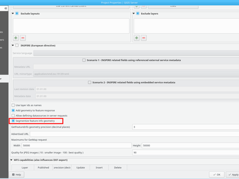
This feature was funded by Kanton of Zug
This feature was developed by Marco Hugentobler
Plugins¶
Feature: Remove trusted status from Plugin Manager¶
Feature: Offline editing: Add flag to only copy selected features¶
This extends the offline editing possibilities to only work on subset of large layers
This feature was funded by DB Fahrwegdienste GmbH
This feature was developed by Matthias Kuhn
Feature: GDALTools moved to Processing¶
GDALTools plugin has been removed.
All functions previously available through the GDALTools plugin were moved to the QGIS Processing framework, allowing to use these tools in scripts, models and execute them in batch processes. Additionaly we updated the algorithms with new parameters, introduced in latest GDAL versions and improved overall UI/UX by exposing some advanced parameters like creation options, NODATA value settings etc.
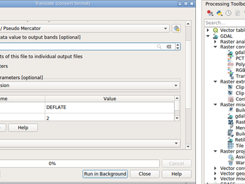
This feature was developed by Alexander Bruy
Feature: allow installing plugins from local ZIP packages¶
It is now more easy to install plugins manually without having to unzip them in the user profile directory by hand.

This feature was developed by Alexander Bruy
Feature: Plugins can provide a custom help in Expression window¶
Plugins which are providing expressions can add a custom help made with HTML strings.
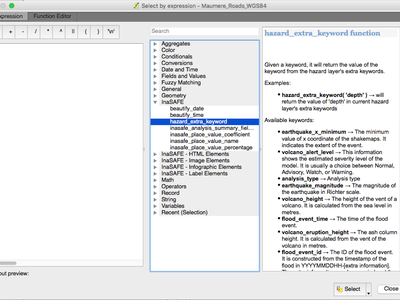
This feature was funded by DFAT/DMI
This feature was developed by Etienne Trimaille (Kartoza)
Programmability¶
Feature: Geometry class updates¶
There has been a major overhaul of the geometry classes in QGIS. The old classes have been renamed (as per the table below). New geometry classes will properly preserve Z and M attributes if present.
References https://github.com/qgis/qgis3.0_api/issues/11
This finally brings back a consistent state in naming within the geometry API
Renames¶
QGIS 2 |
QGIS 3 |
|---|---|
QgsPolygon |
QgsPolygonXY |
QgsMultiPoint |
QgsMultiPointXY |
QgsMultiPolyline |
QgsMultiPolylineXY |
QgsMultiPolygon |
QgsMultiPolygonXY |
QgsPolygonV2 |
QgsPolygon |
QgsMultiPointV2 |
QgsMultiPoint |
QgsMultiPolylineV2 |
QgsMultiPolyline |
QgsMultiPolygonV2 |
QgsMultiPolygon |
See also https://github.com/qgis/QGIS/pull/5491
This feature was developed by Matthias, Nyall and others
Feature: Task manager¶
Introduces a framework for creating background tasks, which are interacted with through a centralised manager
Adds new classes: - QgsTask. An interface for long-running background tasks - QgsTaskManager. Handles groups of tasks - also available as a QgsApplication member for tracking application wide tasks
Add simple python method QgsTask.fromFunction for creation of tasks from a function without having to create a QgsTask subclass
Support for dependent tasks
Cancelling a task on which others depend leads to all these other tasks getting cancelled as well.
Add handling of dependent layers to task manager
If a task has dependent layers which are about to be removed, the task will automatically be cancelled
QgsTasks can have subtasks
Now, a QgsTask can have subtask QgsTasks set by calling QgsTask::addSubTask. Sub tasks can have their own set of dependent tasks.
Subtasks are not visible to users, and users only see the overall progress and status of the parent task.
This allows creation of tasks which are themselves built off many smaller component tasks. The task manager will still handle firing up and scheduling the subtasks, so eg subtasks can run in parallel (if their dependancies allow this).
Subtasks can themselves have subtasks.
This change is designed to allow the processing concept of algorithms and modeller algorithms to be translatable directly to the task manager architecture.
This feature was funded by QGIS Grant Program
This feature was developed by Nyall Dawson (North Road)
Feature: API to allow drag’n’drop of custom browser items¶
QgsDataItem implementations may provide hasDragEnabled(), mimeUri() and QgsCustomDropHandler implementation to deal with drop of custom items.
This feature was developed by Martin Dobias